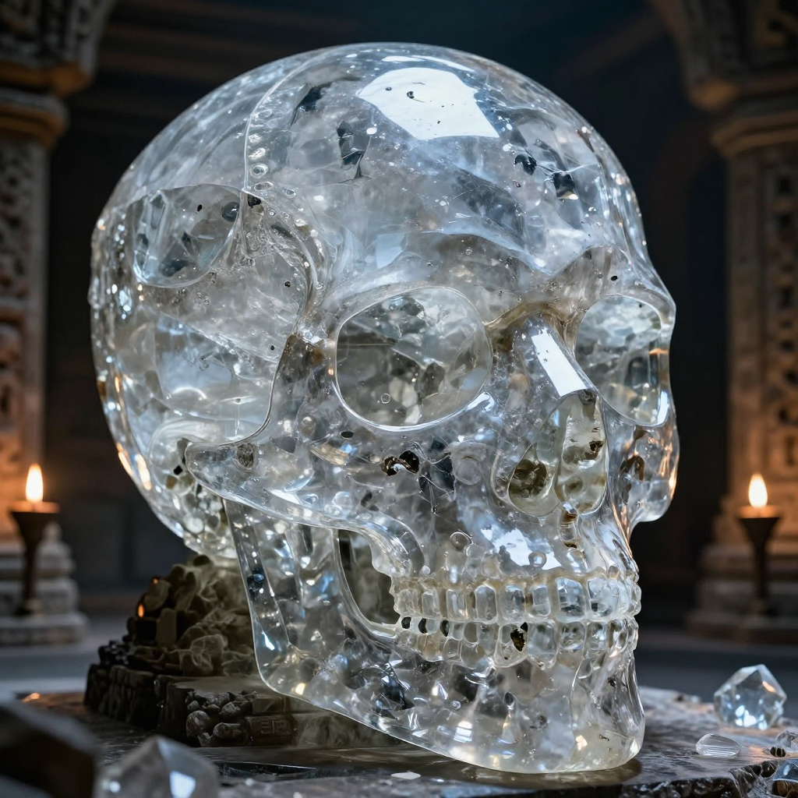
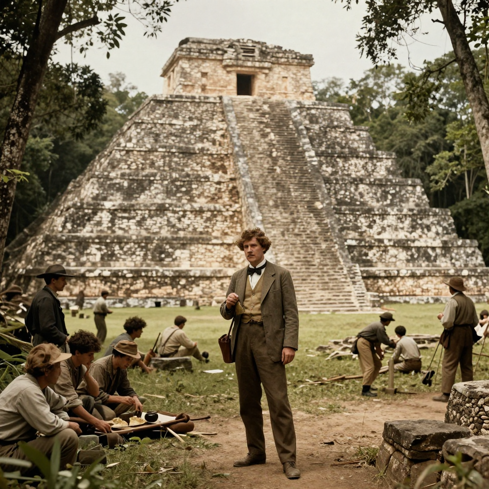
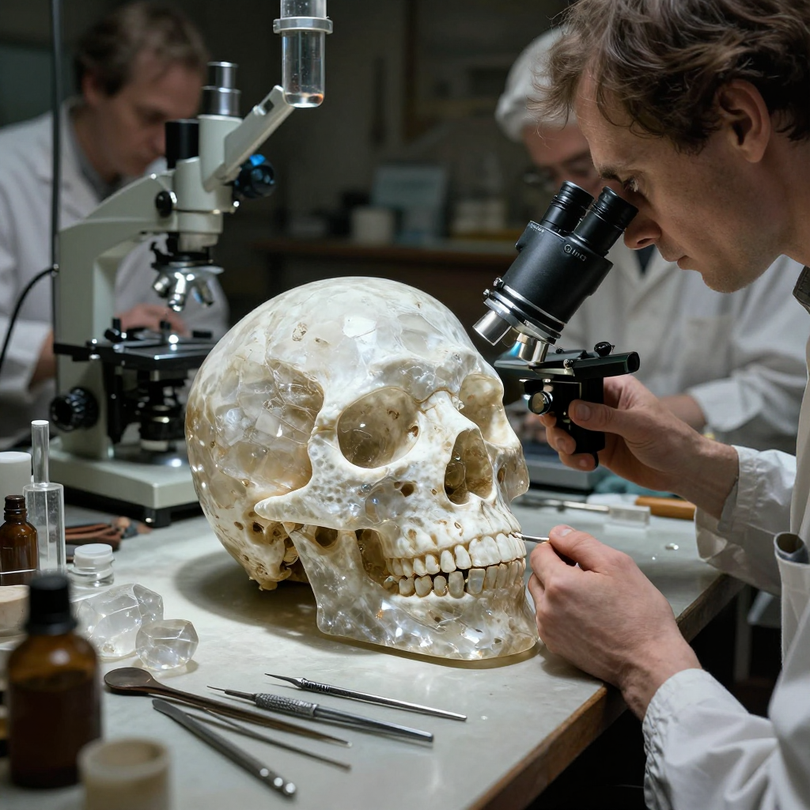

The Crystal Skulls

A mysterious crystal skull - beautiful art, but not ancient magic!
For over a century, mysterious crystal skulls have captured the imagination of explorers, scientists, and mystery lovers around the world. These beautiful quartz carvings were said to be ancient Mayan or Aztec artifacts with magical powers. But the truth behind them turned out to be even more fascinating than the legends!
But here's the mystery: if these skulls were ancient, how did their creators carve such perfect shapes from incredibly hard quartz without modern tools? And why did so many people believe they had supernatural powers?
What Are Crystal Skulls?
Crystal skulls are life-sized human skull carvings made from clear or milky quartz crystal. Some are small, while others are as big as a real human head. The most famous ones look incredibly detailed, with smooth surfaces that seem to glow when light passes through them.
For decades, people believed these skulls were created by ancient civilizations thousands of years ago. Some claimed they had mystical powers - that they could cause visions, heal sickness, or even predict the future!
💎 The Skull of Doom
The most famous crystal skull was said to have the power to cause death if anyone looked into its eyes. (Spoiler: It doesn't!)
The Mitchell-Hedges Discovery
In the 1920s, a British explorer named Frederick Mitchell-Hedges claimed his daughter Anna had discovered a beautiful crystal skull at the Maya ruins of Lubaantun in Belize. This skull was incredibly detailed - so perfect that it seemed impossible for ancient people to have created it.

The Maya ruins of Lubaantun in Belize, where Mitchell-Hedges claimed the skull was found.
Mitchell-Hedges wrote exciting adventure books about finding the skull. He said it was over 3,600 years old and had been used by ancient Maya priests in mysterious rituals. The story captivated people around the world!
🏛️ Museums Around the World
There are several famous crystal skulls in museums, including the British Museum in London and the Smithsonian in Washington D.C.!
The Scientific Investigation
For many years, scientists wondered about these mysterious artifacts. Were they really thousands of years old? How could ancient people without modern tools carve such perfect shapes from incredibly hard quartz crystal?
In the 1990s and 2000s, researchers finally got permission to study the famous skulls using modern scientific equipment. What they discovered was shocking!

Modern scientific analysis revealed the true age of the crystal skulls.
Using powerful microscopes, scientists found tiny tool marks on the skulls. These marks showed that the skulls had been carved using rotating tools - technology that didn't exist in ancient times!
🔬 Under the Microscope
Scientists found traces of modern carborundum, a synthetic abrasive used for cutting stone in the 19th century!
The Surprising Truth
The evidence was clear: the crystal skulls were not ancient at all. They were actually made in the mid-to-late 1800s in Europe - most likely in Germany, in a town called Idar-Oberstein that was famous for carving quartz.
How did they end up in museums? In the 19th century, there was huge excitement about ancient civilizations. Collectors would pay lots of money for "ancient" artifacts. Some clever craftsmen realized they could make crystal skulls and sell them as mysterious ancient treasures!
The Mitchell-Hedges skull? Records show it was actually purchased at a London auction in 1943, not discovered in Belize. The exciting discovery story was made up to make the skull seem more valuable and mysterious.
Why Does the Mystery Continue?
Even though science has proven the crystal skulls are modern creations, some people still believe they have special powers. Movies like "Indiana Jones and the Kingdom of the Crystal Skull" have kept the legend alive in popular culture.
The skulls remain beautiful works of art, even if they're not ancient. The skill required to carve such detailed shapes from quartz is still impressive!
🎬 Hollywood Mystery
The 2008 Indiana Jones movie featuring crystal skulls was partly inspired by the real mystery - even though by then, scientists already knew the truth!
What We've Learned
- Scientific testing can reveal the truth about mysterious artifacts
- Amazing stories aren't always true - sometimes they're created to sell things
- Question everything - even things in museums!
- Modern craftsmen were incredibly skilled - the skulls are still amazing works of art
The crystal skulls may not be ancient, but their story teaches us about human curiosity, the importance of scientific investigation, and how mysteries can capture our imagination for generations!
Clear Summary for Readers of All Ages
The Crystal Skulls can sound dramatic, but the best way to understand it is to separate strong evidence from speculation. This article is written to be clear enough for younger readers while still useful for adults who want reliable context.
In simple terms, this topic matters because it connects three ideas: what happened, how we know, and what remains uncertain. The core story in The Crystal Skulls is easier to follow when we use a timeline, define key terms, and point directly to sources.
For over a century, mysterious crystal skulls have captured the imagination of explorers, scientists, and mystery lovers around the world. These beautiful quartz carvings were said to be ancient Mayan or Aztec artifacts with magical powers. But the truth behind them turned out to be even more fascinating than the legends!
Background Timeline (What Happened, Step by Step)
- Records show it was actually purchased at a London auction in 1943 , not discovered in Belize.
- The 2008 Indiana Jones movie featuring crystal skulls was partly inspired by the real mystery - even though by then, scientists already knew the truth!
- Experts continue revisiting The Crystal Skulls as better tools and stronger source checks become available.
- Experts continue revisiting The Crystal Skulls as better tools and stronger source checks become available.
- Experts continue revisiting The Crystal Skulls as better tools and stronger source checks become available.
This timeline view helps younger readers build a mental map, and it helps adult readers evaluate whether later claims fit the documented sequence of events.
What We Know with Strong Support
Across discussions of The Crystal Skulls, several points are consistently supported by records or repeatable analysis:
- For over a century, mysterious crystal skulls have captured the imagination of explorers, scientists, and mystery lovers around the world.
- These beautiful quartz carvings were said to be ancient Mayan or Aztec artifacts with magical powers.
- But the truth behind them turned out to be even more fascinating than the legends!
- But here's the mystery: if these skulls were ancient, how did their creators carve such perfect shapes from incredibly hard quartz without modern tools?
These claims are stronger because they can be checked independently, rather than depending on one dramatic story or one unverified source.
How Researchers Study This Topic
Good history is a method, not just a story. When experts examine The Crystal Skulls, they usually combine source criticism, technical analysis, and contextual comparison.
- Archaeologists compare excavation reports, layer dates, and artifact context rather than relying on isolated objects.
- Museum catalogs and conservation notes help separate original features from later restoration changes.
- Scholars test competing interpretations against material evidence, inscriptions, and parallel finds from nearby sites.
For readers aged 7+, a simple rule is helpful: if someone makes a big claim, ask, “What is the evidence, and can another expert check it?”
What Experts Still Debate
Even with good evidence, not every question has a final answer. In The Crystal Skulls, debates often continue because the surviving data is incomplete, damaged, or interpreted in different ways.
One common source of confusion is mixing the topics of What Are Crystal Skulls?, The Mitchell-Hedges Discovery, and The Scientific Investigation as if they prove the same thing. In reality, each part of the story may require different standards of proof.
A balanced approach is to keep uncertainty visible: we can confidently state what records show today, while leaving room for future evidence to update the picture.
Myths vs. Evidence
Myth: If a topic is mysterious, experts have no idea what happened.
Evidence-based view: Usually, experts know many parts of the story; the debate is about specific details.
Myth: The most dramatic explanation is probably true.
Evidence-based view: The best explanation is the one that matches the most verifiable facts with the fewest assumptions.
Myth: New claims automatically replace old research.
Evidence-based view: New claims become accepted only after careful checks, replication, and critical review.
Why This Story Still Matters Today
The Crystal Skulls is not only a curiosity from the past. It is also a practical lesson in how people evaluate information. In a world full of fast headlines, this topic reminds us to slow down, check sources, and separate confidence from certainty.
For younger readers, this builds critical-thinking skills. For adult readers, it improves media literacy and historical judgment. In both cases, the goal is the same: understand the past clearly enough to make better decisions in the present.
Mini Glossary (Plain Language)
- Primary source: A record made close to the event, like a report, letter, inscription, or official document.
- Secondary source: A later explanation that interprets primary evidence.
- Hypothesis: A proposed explanation that must be tested against evidence.
- Consensus: The view most experts currently support, knowing it can change with new data.
- Context layer: The archaeological layer where an object is found, which helps date and interpret it.
- Provenance: The known history of where an artifact came from and who handled it over time.
Quick Recap
If you remember only three things about The Crystal Skulls, keep these: (1) there is real evidence worth studying, (2) some questions remain open, and (3) careful source-checking is the best path to reliable understanding.
That combination of curiosity and caution is what turns a mystery into a meaningful history lesson for readers of every age.
References & Further Reading
Editorial note: We cross-check claims across multiple independent sources. See our Editorial Policy.